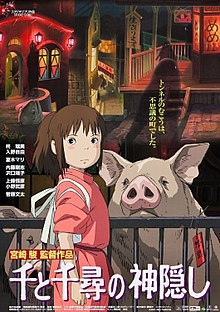

9 filmes que todo designer deve assistir para se inspirar
Publicado em 08 de Abril de 2025
Quem trabalha com design precisa de inspiração constante e nada como beber de uma fonte tão divertida e rica como o cinema, não é mesmo? A lista de filmes que todo designer deve assistir não tem fim, além de ser um território recheado de repertório para todos os gostos e necessidades.
Por isso, garimpamos algumas joias da sétima arte, que certamente farão muita diferença no rol de ideias dos designers em qualquer segmento da área. São histórias fictícias e documentários que instruem, emocionam e inspiram qualquer um.
Então, que tal embarcar nessa viagem cinematográfica e mergulhar na telona pra conferir algumas obras de arte imperdíveis?
- 1.A invenção de Hugo Cabret

Nessa história ambientada na década de 30, Martin Scorsese faz uma comovente homenagem ao cineasta Georges Méliès, diretor de Viagem à lua, de 1902. Na película, Hugo Cabret é um garoto que vive escondido na estação de trem Gare du Nord, em Paris. Depois de perder o pai, herda um misterioso robô danificado.
A rotina do menino se divide entre as fugas fantásticas do inspetor da estação de trem e a relação de amizade com uma garota. A menina, não por acaso, é portadora da chave (com formato de coração) que se encaixa como uma luva no robô.
Para completar o combo de magia e encantamento, o cenário não poderia deixar de explorar a estética steampunk pelo apurado perfeccionismo do cultuado Scorsese. Junto a tudo isso, o enredo mostra o pioneirismo no uso de efeitos fotográficos numa ode à criação do cinema. É lindo, sensível e muito bem produzido.
- 2.Capitão América 3: Guerra Civil

Desde o lançamento do primeiro Homem Aranha, em 2002, as versões de super-heróis para o cinema nunca mais foram as mesmas. De lá para cá, as produções estão cada vez mais sofisticadas, tanto no aspecto técnico quanto no conteúdo.
Na mesma vibe, temos Capitão América 3: Guerra Civil, que entrou para a lista de filmes mais comentados de 2016, batendo recordes de bilheteria no mundo todo. A trama transcende a ideia da luta do bem contra o mal e explora uma separação entre os Vingadores em dois grupos: um liderado pelo Capitão América e o outro, sob o comando do controvertido Tony Stark – o Homem de Ferro.
Nessa batalha de titãs, a Marvel não poupou esforços nem investimento, demonstrando como os filmes podem explorar tão bem o universo dos Comics e o quanto de demanda existe nesse ramo para os profissionais de design.
- 3.Abstract: the art of design

Produzida pela Netflix, a série tem o formato semelhante ao de Mind of chef, porém, direcionado aos designers. O conteúdo explora o perfil de grandes nomes do alto escalão do design atual, incluindo o arquiteto Bjarke Ingels, a designer gráfica da Pentagram, Paula Scher, e Tinker Hatfield, designer da Nike.
Trata-se de uma série bem produzida, que retrata muito bem o espaço do design atual, embora não chegue a ser considerada uma produção de cunho crítico. Vale a curiosidade, principalmente para quem atua na área.
- 4.Logorama

Entre os filmes que todo designer deve assistir, incluímos esse curta de apenas 15 minutos — que levou 6 anos para ser produzido — foi considerado o melhor da sua categoria em 2009 no Festival de Cannes e recebeu o Oscar de melhor animação em 2010.
Dirigido por François Alaux, Hervé de Crecy e Ludovic Houplain, a história, ambientada em Los Angeles, é simples e nada se distingue de tantas que já estamos habituados a ver nos grandes enredos. No entanto, é inteira inspirada em logomarcas retratando tudo o que acontece nas cidades com enormes letreiros exibindo as inúmeras marcas do cotidiano dos moradores.
O ponto-chave é a irreverente homenagem à criatividade, usando algo trivial e transformado no coração da trama, além da explícita crítica à infinidade de marcas entranhadas em nossas vidas o tempo todo.
- 5.Helvetica

É um documentário realizado por Gary Hustwit, que traduz o papel da fonte tipográfica mais famosa no mundo do design na cultura visual das últimas 5 décadas: Helvetica. Entre os entrevistados estão Matthew Carter, Erik Spiekermann, Paula Scher, Massimo Vignelli, Neville Brody e outras figuras emblemáticas.
A obra faz parte da trilogia do design que também contempla Objectified, sobre design industrial e Urbanized, um tour pelo universo do urbanismo. Helvetica é o mais conhecido dos três. Huswit foi muito competente ao penetrar no processo criativo dos designers modernos, respeitando seu valor.
- 6.Walt antes do Mickey

É um filme inspirado, especialmente para os ilustradores e animadores com suas duplas funções. A história retrata a trajetória cheia de altos e baixos de um dos maiores ícones da arte da animação cinematográfica, o cultuado Walt Disney.
Na película, podemos acompanhar uma determinação de tirar o fôlego, entremeada por dias sombrios com a falta de absolutamente tudo que uma pessoa precisa para viver, até o lançamento do icônico Mickey Mouse.
Suas referências históricas cinematográficas servem como identificação para muitos sonhadores que passam por momentos terríveis como Walt Disney, que nunca desistiu e realizou seus sonhos, como todos já sabem. Um bom exemplo de persistência e competência.
- 7.O fabuloso destino de Amélie Poulain

A produção de fotografia e direção de arte são memoráveis e, também, fontes obrigatórias de criatividade, principalmente para quem trabalha com o universo da cor. A história se passa em Paris e narra a vida solitária de Amélie Poulain, que descobre como pequenos gestos podem transformar a vida das pessoas para melhor, sem dúvida!
A partir desse ponto, a protagonista decide fazer algo por si mesma, em meio a muita autossabotagem, mas com irreverência e criatividade. O filme é leve, um pouco melancólico, mas definitivamente, encantador.
- 8.Metropolis

Cinema mudo? Exatamente! Feito em 1927, essa obra-prima é eloquente como todas desse período. Apesar da longa passagem de tempo, ainda é uma incrível construção do gênero sci-fi, ambientado em um futuro distópico e impressiona mesmo sem as parafernálias tecnológicas da computação gráfica.
O diretor Fritz Lang usou velhos truques com espelhos e miniaturas para criar os efeitos especiais do longa. Acompanhar a narrativa com a lentidão própria da época pode ser um desafio para a maioria das pessoas, no entanto, vale muito a pena parar tudo pra curtir o drama e o esplendor visual dos jogos de sombra que só uma película antiga, em preto e branco, é capaz de proporcionar.
- 9.A viagem de Chihiro
-

O filme conta a aventura de uma garotinha que viaja para a sua nova casa na companhia dos pais. A família acaba se perdendo no meio do percurso e, ao atravessar um misterioso túnel, vivencia uma fábula recheada de referências sobre enfrentamento dos medos e amadurecimento.
Hayao Miyazaki carregou nas tintas habituais de sua técnica impecável para nos brindar com muita sensibilidade nessa obra. É um convite de retorno às memórias da infância e seu imaginário para apreciar a simplicidade de tudo o que é simples e belo. Reserve um tempo sem pressa e inspire-se!
Esses são apenas alguns filmes que todo designer deve assistir e fazer uma viagem a diversos universos onde é possível sempre buscar conhecimento a fim de aperfeiçoar os talentos e progredir na carreira.